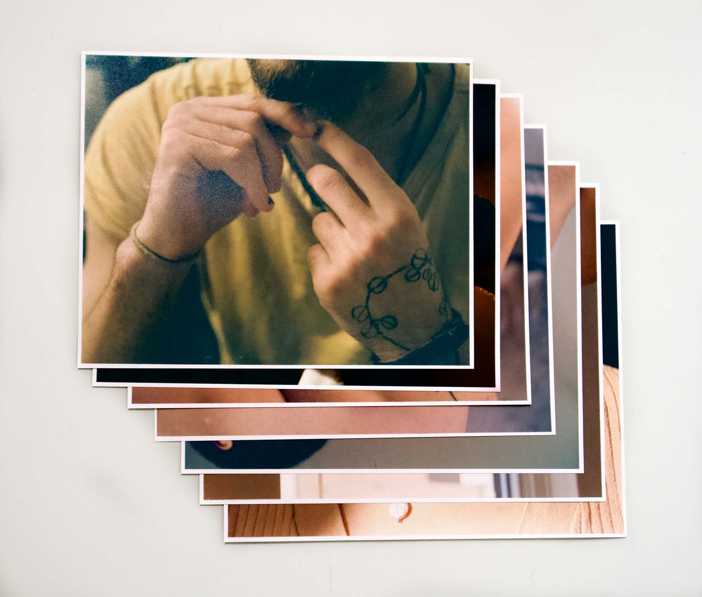
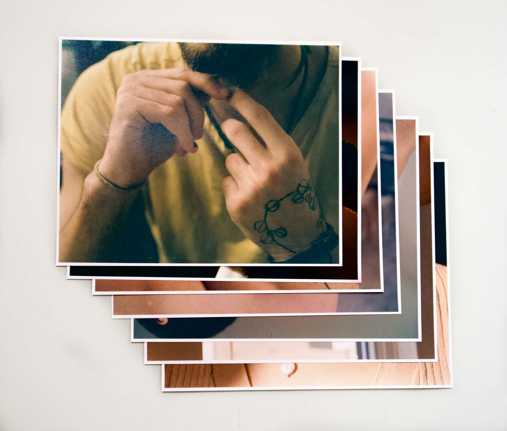
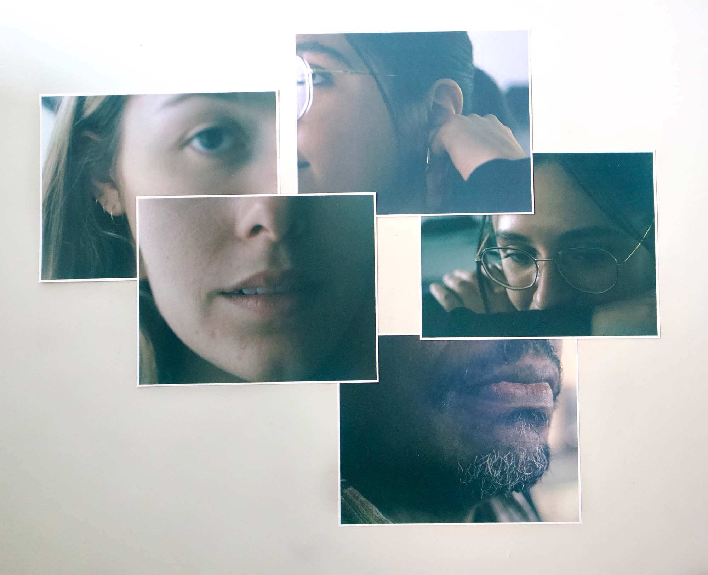
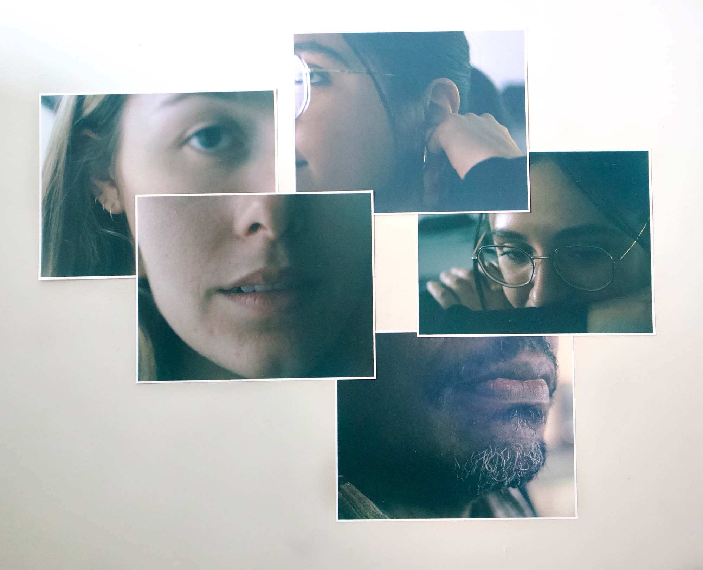

Décorps
Je trouve une grande beauté au corps humain. Cet assemblage d'os, d'articulations, de muscles, d'organes, de vaisseaux, de tissus qui forment une personne. Ce phénomène naturel trouve sa magie dans son unicité. À partir de systèmes similaires, il n'y a pas deux corps identiques.
Les études de la danse et de l'anatomie m'ont habituées à analyser le corps en mouvement ou disséqué. Avec la photographie, j'ai trouvé une nouvelle façon de l'explorer.
Photographier différents gros plans du haut du corps m'a permis de capturer et d'apprécier les détails de la surface d'un corps. Les poils qui réagissent à l'environnement ou aux émotions d'une personne, les imperfections de la peau qui communiquent son histoire, les structures osseuses et musculaires qui reflètent sa singularité.
Décorps exprime la diversité des saisons au Canada. Le changement de luminosité et de couleurs de septembre à décembre. Par conséquent, le résultat visuel de la série varie en termes de couleurs et d'exposition.
Mon projet photographique exprime la beauté que je vois dans le corps humain, sa réflexion et sa réponse à son environnement.
 



 
